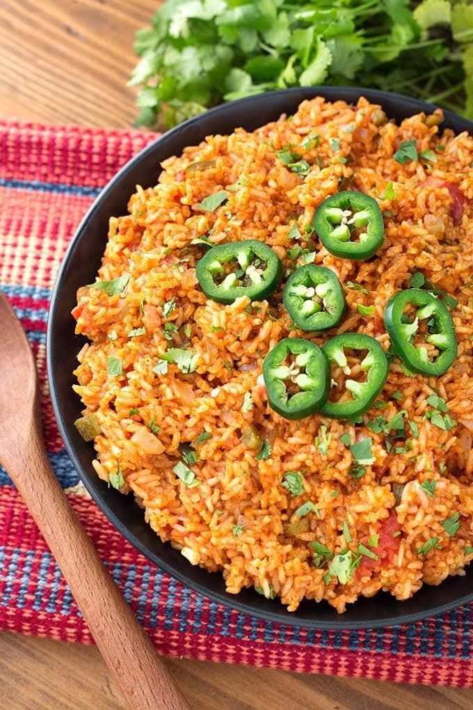

Tiger Chicken
Homepage

Description
Tiger chicken is a bold, flavorful dish featuring crispy or stir-fried chicken tossed in a sweet, spicy, and slightly tangy sauce. Often made with ingredients like soy sauce, garlic, ginger, chili peppers, and a touch of sugar or honey, it delivers a balance of heat and richness with a glossy finish. The name usually comes from its “striped” appearance—crispy chicken coated in a vibrant sauce—and its fierce, punchy flavor.
Ingredients
- 1 tablespoon avocado oil, or more as needed
- ½ medium onion, finely chopped
- 2 large cloves garlic, minced
- 1 cup long-grain rice
- 1 ½ cups low-sodium chicken stock
- ½ cup tomato sauce
- 1 teaspoon salt
- ¼ teaspoon ground cumin
- 1 pinch cayenne pepper
Steps
- Turn on a multi-functional pressure cooker (such as Instant Pot); select sauté function and adjust to medium.
- Cover the bottom of the pot with avocado oil. Cook and stir onion until soft, 4 to 5 minutes. Add garlic and cook until fragrant, about 30 seconds.
- Add rice to the pot; mix until coated with oil and lightly browned.
- Pour in chicken stock; stir any browned bits off the bottom of the pot.
- Mix in tomato sauce, salt, cumin, and cayenne pepper.
- Close and lock the lid. Seal the vent and select high-pressure function. Set a timer for 7 minutes; allow 10 to 15 minutes for pressure to build.
- Release pressure carefully using the quick-release method according to the manufacturer's instructions, about 5 minutes. Unlock and remove the lid. Stir rice before serving.